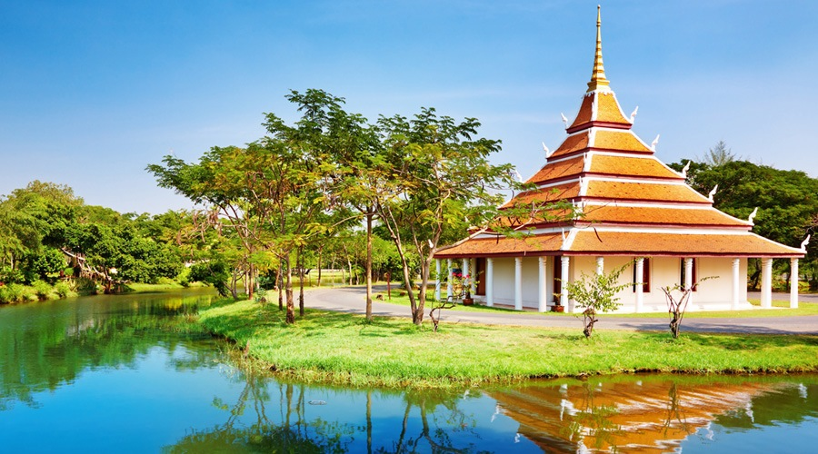

2 days ago . by Michael Ford
Thailand Travel Tips
Thailand is the travel hub of southeast Asia. Most people coming into the region fly into bangkok...
2 days ago . by Joyce Contreras
Castle of Chenonceau, France
Like so many other wastles, Chenonceau was built on the site of an earlier property-in fact two earlier properties stood here. A manor house that was burned
2 days ago . by Laura Wallace
Guide To Experiencing The Maldives
I've always been interested in seeing the Maldives and, last month, I finally went! I saw both of sides of the tourism here: the famous resorts and the new budget...